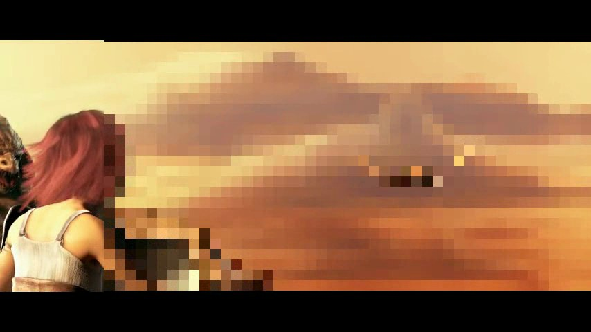

얼굴 검출 + 모자이크/블러 처리는 이번 제안서 작성 전 PoC로 직접 구현해 검증 완료한 상태입니다.
1080p 영상을 노트북 CPU만으로 100fps 이상(실시간의 4배 이상)으로 처리합니다.
아래에서 결과 영상을 바로 확인하실 수 있습니다.
2. Before / After (PoC 결과)
오픈소스 영상(Sintel 트레일러, CC-BY)에 본 PoC를 적용한 결과입니다.
BEFORE — 원본

AFTER — 모자이크 처리
전체 결과 영상
모자이크 모드 결과 전체블러 모드 결과 전체
처리 성능 측정 결과
항목
값
비고
입력 영상
854×480, 24fps, 1,253 프레임 (약 52초)
Sintel 트레일러
얼굴 검출 프레임
351 / 1,253
총 384개 얼굴 인스턴스
모자이크 처리 시간
10.9초
평균 114.9 fps
블러 처리 시간
11.6초
평균 108.4 fps
실행 환경
CPU only (Apple Silicon)
GPU 불필요
3. 작업 범위
구분
내용
2-1 얼굴 마스킹 + 분리 저장
YuNet 기반 얼굴 검출 → 모자이크/블러 처리 → 원본·가공본 분리 저장
2-2 유료 권한 분기
구독·결제 상태 검증 후 원본 영상 제공 로직
2-3 스토리지 마이그레이션
AWS S3/CloudFront → Cloudflare R2 이전 + 스트리밍 환경
2-4 일회성 보안 URL
5분 만료 pre-signed URL 발급 (기업·관리자 전용)
2-5 워터마크 삽입
사용자/기업 식별 가능한 동적 워터마크 (유출 추적 가능)
4. 기술 스택
레이어
스택
언어
Python 3.12
영상 처리
OpenCV 4.x + YuNet (Apache 2.0, 무료)
워터마크
OpenCV 직접 합성 또는 ffmpeg drawtext 필터
스토리지
AWS S3 / CloudFront → Cloudflare R2
API · 인프라
FastAPI 또는 기존 백엔드 스택 맞춤 / Docker / 큐(필요 시)
비용 모델
외부 API 호출 없음 (로컬 추론). 런타임 비용 = 서버·스토리지뿐
5. S3 → Cloudflare R2 마이그레이션 전략
마이그레이션 방식은 현재 운영 중인 시스템의 URL 발급 구조 · 데이터 규모 · 다운타임 허용 여부에 따라 달라집니다.
아래 3가지 방식 중 구현 상세를 확인한 뒤 적절한 방법을 채택해 적용하겠습니다.
방식
적합 상황
추가 비용 발생 지점
Super Slurper 일괄 이관
소량~중량 데이터, 짧은 다운타임 허용
AWS egress (S3 → 외부 전송)
Sippy 점진 이관 (Lazy)
대용량·콜드 데이터, 다운타임 0 필요
읽힌 객체만 egress 발생 → 비용 최소화
이중 쓰기 + 백필
운영 중 트래픽 많고 안전 검증 필요
일시적 이중 스토리지 비용
비용 안내. 위 어떤 방식이든 AWS egress 비용은 별도로 발생합니다 (1TB 기준 약 12만원). Cloudflare R2 자체와 Super Slurper 도구는 무료지만, S3에서 객체를 빼내는 비용은 AWS 측 청구입니다. 정확한 비용은 현 데이터 규모 확인 후 견적에 포함해 안내드립니다.